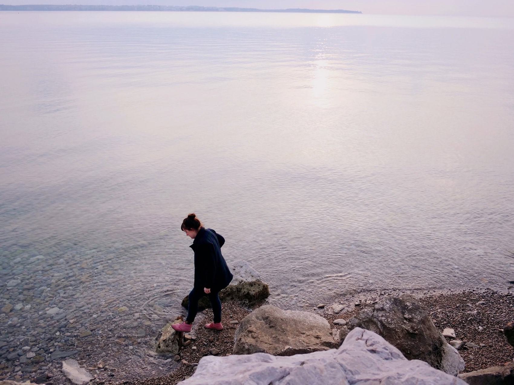

"We're all just walking each other home" — Ram Dass
Whether you're trying to conceive, moving through a big life transition, or simply craving more balance and connection — with yourself, your body, or the people around you — I'd like to offer you a different way.
Take a walk with Bakasana →Combining the simple act of walking with nature-based coaching helps you slow down, reconnect, and find clarity. Movement encourages insight. We walk, and things settle into place.
Does this sound familiar?
You're on a fertility journey, and you need somewhere to hold the hope, the waiting, and the grief all at once.
You feel disconnected from your body and want to find your way back to it.
Life feels full but somehow out of balance, and you're not sure where to start putting it right.
You're moving through a big transition — becoming a parent, changing course, growing older — and want to meet it with more steadiness.
You keep trying to think your way to clarity, and it isn't working. You want to feel your way there instead.
You're craving space that isn't clinical or corporate. Just honest and human.
If any of this feels familiar, why not take the next step?